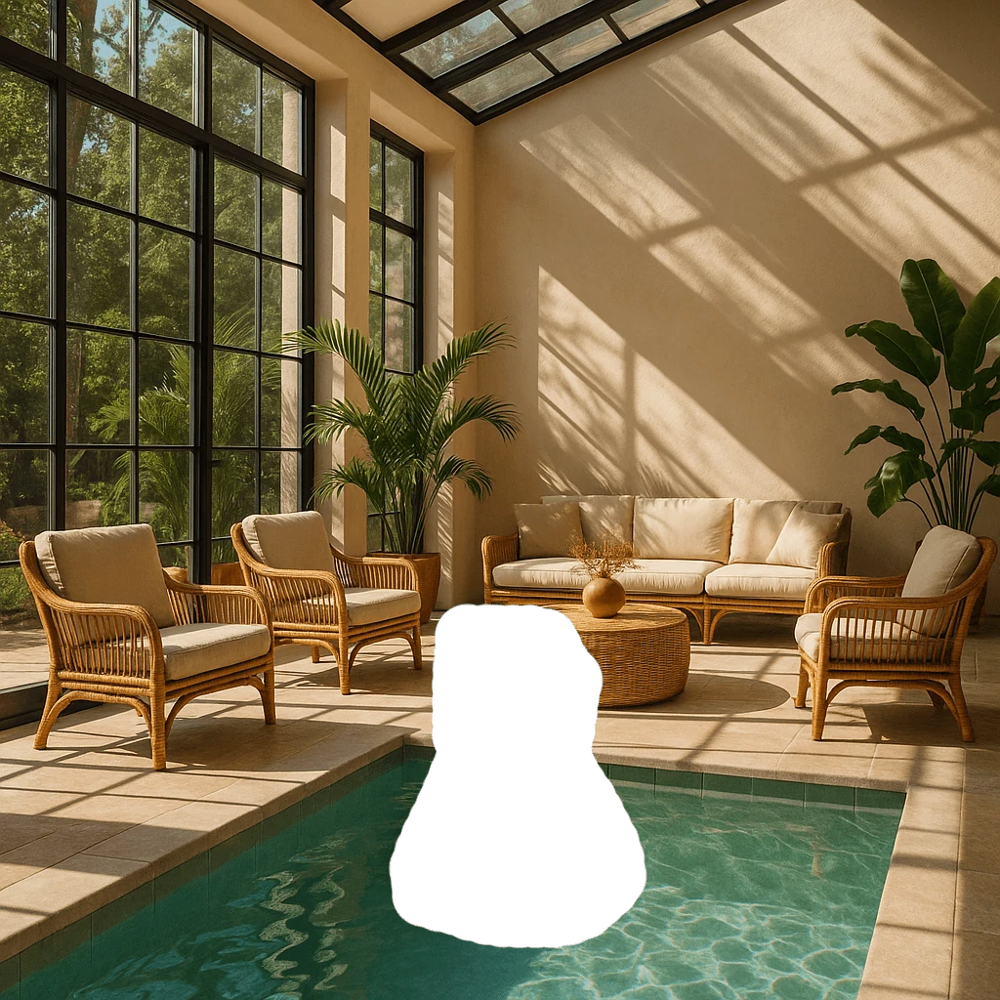
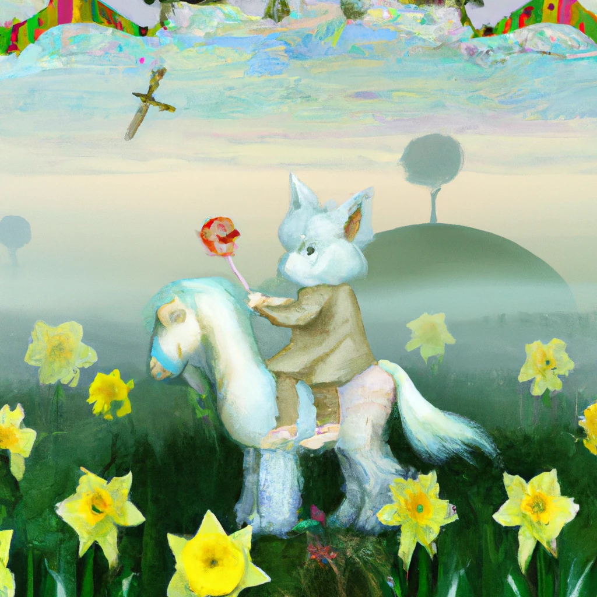
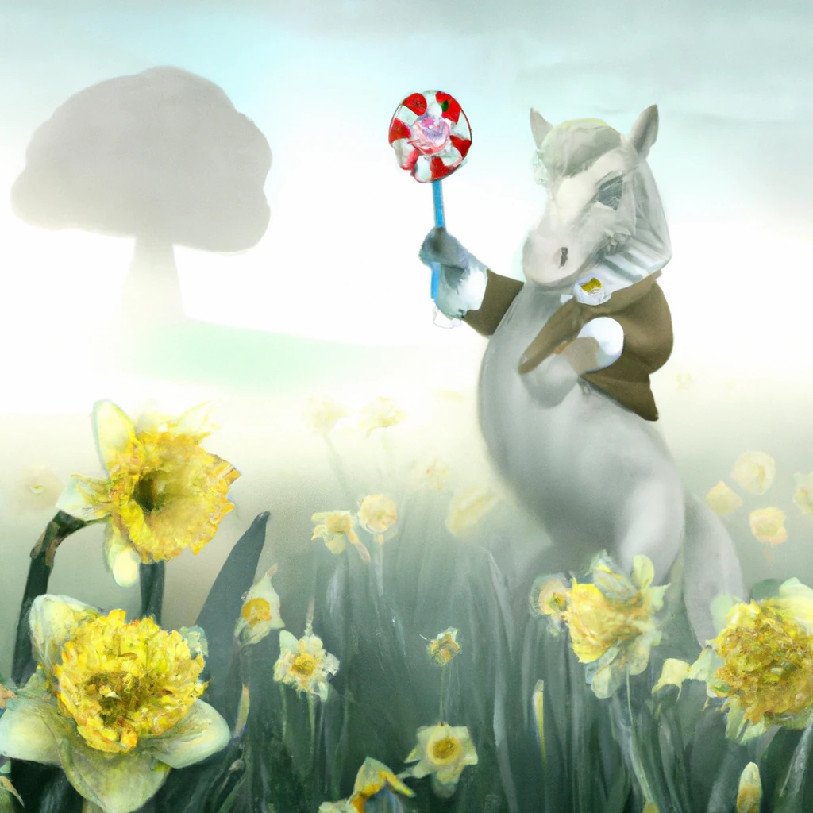
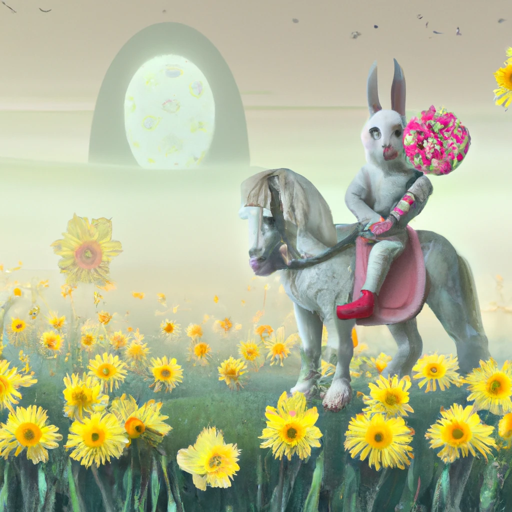
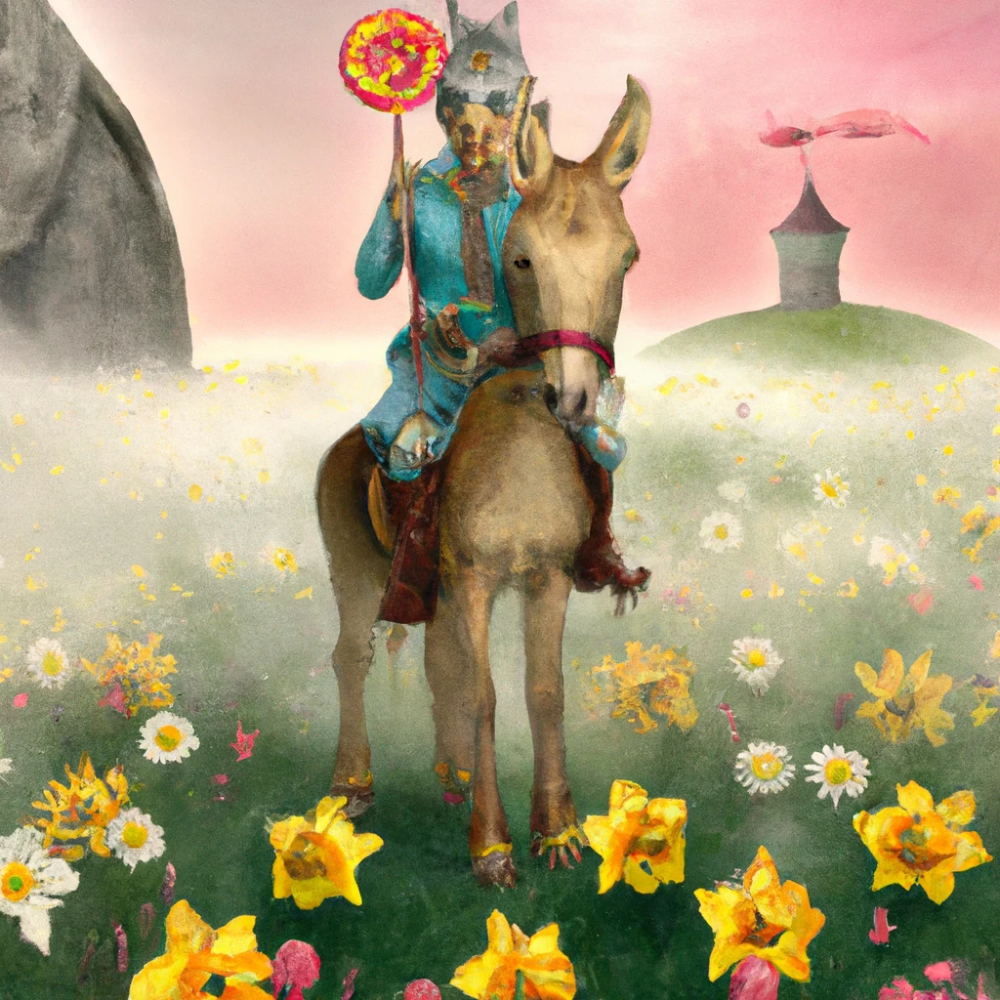

Construire des applications de génération d'images#
Les LLMs ne se limitent pas à la génération de texte. Il est également possible de générer des images à partir de descriptions textuelles. Avoir des images comme modalité peut être très utile dans de nombreux domaines tels que la MedTech, l'architecture, le tourisme, le développement de jeux et bien plus encore. Dans ce chapitre, nous examinerons les deux modèles de génération d'images les plus populaires, DALL-E et Midjourney.
Introduction#
Dans cette leçon, nous aborderons :
- La génération d'images et pourquoi elle est utile.
- DALL-E et Midjourney, ce qu'ils sont et comment ils fonctionnent.
- Comment créer une application de génération d'images.
Objectifs d'apprentissage#
Après avoir terminé cette leçon, vous serez capable de :
- Construire une application de génération d'images.
- Définir des limites pour votre application avec des méta-prompts.
- Travailler avec DALL-E et Midjourney.
Pourquoi créer une application de génération d'images ?#
Les applications de génération d'images sont un excellent moyen d'explorer les capacités de l'IA générative. Elles peuvent être utilisées, par exemple :
-
Édition et synthèse d'images. Vous pouvez générer des images pour divers cas d'utilisation, tels que l'édition et la synthèse d'images.
-
Appliquées à divers secteurs. Elles peuvent également être utilisées pour générer des images pour divers secteurs comme la MedTech, le tourisme, le développement de jeux et bien plus encore.
Scénario : Edu4All#
Dans le cadre de cette leçon, nous continuerons à travailler avec notre startup, Edu4All. Les étudiants créeront des images pour leurs évaluations, le choix des images leur appartient, mais elles pourraient être des illustrations pour leur propre conte de fées, la création d'un nouveau personnage pour leur histoire ou les aider à visualiser leurs idées et concepts.
Voici ce que les étudiants d'Edu4All pourraient générer, par exemple, s'ils travaillent en classe sur les monuments :
en utilisant un prompt comme :
"Chien à côté de la Tour Eiffel au lever du soleil"
Qu'est-ce que DALL-E et Midjourney ?#
DALL-E et Midjourney sont deux des modèles de génération d'images les plus populaires, permettant d'utiliser des prompts pour générer des images.
DALL-E#
Commençons par DALL-E, qui est un modèle d'IA générative capable de créer des images à partir de descriptions textuelles.
DALL-E est une combinaison de deux modèles, CLIP et attention diffusée.
-
CLIP, est un modèle qui génère des embeddings, des représentations numériques de données, à partir d'images et de texte.
-
Attention diffusée, est un modèle qui génère des images à partir d'embeddings. DALL-E est entraîné sur un ensemble de données d'images et de texte et peut être utilisé pour générer des images à partir de descriptions textuelles. Par exemple, DALL-E peut être utilisé pour générer des images d'un chat avec un chapeau ou d'un chien avec une crête.
Midjourney#
Midjourney fonctionne de manière similaire à DALL-E, en générant des images à partir de prompts textuels. Midjourney peut également être utilisé pour générer des images avec des prompts comme "un chat avec un chapeau" ou "un chien avec une crête".
 Crédit image Wikipedia, image générée par Midjourney
Crédit image Wikipedia, image générée par Midjourney
Comment fonctionnent DALL-E et Midjourney#
Tout d'abord, DALL-E. DALL-E est un modèle d'IA générative basé sur l'architecture transformer avec un transformer autoregressif.
Un transformer autoregressif définit comment un modèle génère des images à partir de descriptions textuelles, il génère un pixel à la fois, puis utilise les pixels générés pour générer le pixel suivant. Il passe par plusieurs couches dans un réseau de neurones, jusqu'à ce que l'image soit complète.
Grâce à ce processus, DALL-E contrôle les attributs, les objets, les caractéristiques et bien plus encore dans l'image qu'il génère. Cependant, DALL-E 2 et 3 offrent un contrôle encore plus précis sur l'image générée.
Construire votre première application de génération d'images#
Alors, que faut-il pour créer une application de génération d'images ? Vous aurez besoin des bibliothèques suivantes :
- python-dotenv, il est fortement recommandé d'utiliser cette bibliothèque pour conserver vos secrets dans un fichier .env séparé du code.
- openai, cette bibliothèque vous permettra d'interagir avec l'API OpenAI.
- pillow, pour travailler avec des images en Python.
- requests, pour vous aider à effectuer des requêtes HTTP.
Créer et déployer un modèle Azure OpenAI#
Si ce n'est pas encore fait, suivez les instructions sur la page Microsoft Learn pour créer une ressource et un modèle Azure OpenAI. Sélectionnez DALL-E 3 comme modèle.
Créer l'application#
-
Créez un fichier .env avec le contenu suivant :
AZURE_OPENAI_ENDPOINT=<your endpoint> AZURE_OPENAI_API_KEY=<your key> AZURE_OPENAI_DEPLOYMENT="dall-e-3"
Trouvez ces informations dans le portail Azure OpenAI Foundry pour votre ressource dans la section "Déploiements".
-
Rassemblez les bibliothèques ci-dessus dans un fichier nommé requirements.txt comme suit :
python-dotenv openai pillow requests
-
Ensuite, créez un environnement virtuel et installez les bibliothèques :
python3 -m venv venv source venv/bin/activate pip install -r requirements.txt
Pour Windows, utilisez les commandes suivantes pour créer et activer votre environnement virtuel :
python3 -m venv venv venv\Scripts\activate.bat
-
Ajoutez le code suivant dans un fichier nommé app.py :
import openai import os import requests from PIL import Image import dotenv from openai import OpenAI, AzureOpenAI # import dotenv dotenv.load_dotenv() # configure Azure OpenAI service client client = AzureOpenAI( azure_endpoint = os.environ["AZURE_OPENAI_ENDPOINT"], api_key=os.environ['AZURE_OPENAI_API_KEY'], api_version = "2024-02-01" ) try: # Create an image by using the image generation API generation_response = client.images.generate( prompt='Bunny on horse, holding a lollipop, on a foggy meadow where it grows daffodils', size='1024x1024', n=1, model=os.environ['AZURE_OPENAI_DEPLOYMENT'] ) # Set the directory for the stored image image_dir = os.path.join(os.curdir, 'images') # If the directory doesn't exist, create it if not os.path.isdir(image_dir): os.mkdir(image_dir) # Initialize the image path (note the filetype should be png) image_path = os.path.join(image_dir, 'generated-image.png') # Retrieve the generated image image_url = generation_response.data[0].url # extract image URL from response generated_image = requests.get(image_url).content # download the image with open(image_path, "wb") as image_file: image_file.write(generated_image) # Display the image in the default image viewer image = Image.open(image_path) image.show() # catch exceptions except openai.InvalidRequestError as err: print(err)
Explications du code :
-
Tout d'abord, nous importons les bibliothèques nécessaires, y compris la bibliothèque OpenAI, la bibliothèque dotenv, la bibliothèque requests et la bibliothèque Pillow.
import openai import os import requests from PIL import Image import dotenv
-
Ensuite, nous chargeons les variables d'environnement du fichier .env.
# import dotenv dotenv.load_dotenv()
-
Après cela, nous configurons le client du service Azure OpenAI.
# Get endpoint and key from environment variables client = AzureOpenAI( azure_endpoint = os.environ["AZURE_OPENAI_ENDPOINT"], api_key=os.environ['AZURE_OPENAI_API_KEY'], api_version = "2024-02-01" )
-
Ensuite, nous générons l'image :
# Create an image by using the image generation API generation_response = client.images.generate( prompt='Bunny on horse, holding a lollipop, on a foggy meadow where it grows daffodils', size='1024x1024', n=1, model=os.environ['AZURE_OPENAI_DEPLOYMENT'] )
Le code ci-dessus répond avec un objet JSON contenant l'URL de l'image générée. Nous pouvons utiliser l'URL pour télécharger l'image et l'enregistrer dans un fichier.
-
Enfin, nous ouvrons l'image et utilisons le visualiseur d'images standard pour l'afficher :
image = Image.open(image_path) image.show()
Plus de détails sur la génération d'image#
Examinons le code qui génère l'image plus en détail :
generation_response = client.images.generate(
prompt='Bunny on horse, holding a lollipop, on a foggy meadow where it grows daffodils',
size='1024x1024', n=1,
model=os.environ['AZURE_OPENAI_DEPLOYMENT']
)
- prompt, est le prompt textuel utilisé pour générer l'image. Dans ce cas, nous utilisons le prompt "Lapin sur un cheval, tenant une sucette, dans une prairie brumeuse où poussent des jonquilles".
- size, est la taille de l'image générée. Dans ce cas, nous générons une image de 1024x1024 pixels.
- n, est le nombre d'images générées. Dans ce cas, nous générons deux images.
- temperature, est un paramètre qui contrôle la part de hasard dans le résultat d'un modèle d'IA générative. La température est une valeur entre 0 et 1 où 0 signifie que le résultat est déterministe et 1 signifie qu'il est aléatoire. La valeur par défaut est 0,7.
Il y a encore plus de choses que vous pouvez faire avec les images, que nous aborderons dans la section suivante.
Capacités supplémentaires de la génération d'images#
Vous avez vu jusqu'à présent comment nous avons pu générer une image en quelques lignes de code Python. Cependant, il y a encore plus de choses que vous pouvez faire avec les images.
Vous pouvez également faire ce qui suit :
- Effectuer des modifications. En fournissant une image existante, un masque et un prompt, vous pouvez modifier une image. Par exemple, vous pouvez ajouter quelque chose à une partie de l'image. Imaginez notre image de lapin, vous pouvez ajouter un chapeau au lapin. Pour ce faire, il suffit de fournir l'image, un masque (identifiant la partie de la zone à modifier) et un prompt textuel pour indiquer ce qui doit être fait.
Note : cela n'est pas pris en charge dans DALL-E 3.
Voici un exemple utilisant GPT Image :
response = client.images.edit(
model="gpt-image-1",
image=open("sunlit_lounge.png", "rb"),
mask=open("mask.png", "rb"),
prompt="A sunlit indoor lounge area with a pool containing a flamingo"
)
image_url = response.data[0].url
L'image de base ne contiendrait que le salon avec piscine, mais l'image finale inclurait un flamant rose :

-
Créer des variations. L'idée est de prendre une image existante et de demander à ce que des variations soient créées. Pour créer une variation, vous fournissez une image et un prompt textuel, ainsi qu'un code comme suit :
response = openai.Image.create_variation( image=open("bunny-lollipop.png", "rb"), n=1, size="1024x1024" ) image_url = response['data'][0]['url']
Note : cela est uniquement pris en charge par OpenAI.
Température#
La température est un paramètre qui contrôle la part de hasard dans le résultat d'un modèle d'IA générative. La température est une valeur entre 0 et 1 où 0 signifie que le résultat est déterministe et 1 signifie qu'il est aléatoire. La valeur par défaut est 0,7.
Examinons un exemple de fonctionnement de la température, en exécutant ce prompt deux fois :
Prompt : "Lapin sur un cheval, tenant une sucette, dans une prairie brumeuse où poussent des jonquilles"

Maintenant, exécutons ce même prompt pour voir que nous n'obtenons pas deux fois la même image :

Comme vous pouvez le voir, les images sont similaires, mais pas identiques. Essayons de changer la valeur de la température à 0,1 et voyons ce qui se passe :
generation_response = client.images.create(
prompt='Bunny on horse, holding a lollipop, on a foggy meadow where it grows daffodils', # Enter your prompt text here
size='1024x1024',
n=2
)
Changer la température#
Essayons donc de rendre le résultat plus déterministe. Nous avons pu observer à partir des deux images générées que dans la première image, il y a un lapin et dans la deuxième image, il y a un cheval, donc les images varient beaucoup.
Changeons donc notre code et réglons la température à 0, comme suit :
generation_response = client.images.create(
prompt='Bunny on horse, holding a lollipop, on a foggy meadow where it grows daffodils', # Enter your prompt text here
size='1024x1024',
n=2,
temperature=0
)
Maintenant, lorsque vous exécutez ce code, vous obtenez ces deux images :


Ici, vous pouvez clairement voir comment les images se ressemblent davantage.
Comment définir des limites pour votre application avec des méta-prompts#
Avec notre démonstration, nous pouvons déjà générer des images pour nos clients. Cependant, nous devons créer certaines limites pour notre application.
Par exemple, nous ne voulons pas générer des images qui ne sont pas adaptées au travail ou qui ne sont pas appropriées pour les enfants.
Nous pouvons le faire avec des méta-prompts. Les méta-prompts sont des prompts textuels utilisés pour contrôler le résultat d'un modèle d'IA générative. Par exemple, nous pouvons utiliser des méta-prompts pour contrôler le résultat et garantir que les images générées sont adaptées au travail ou appropriées pour les enfants.
Comment cela fonctionne-t-il ?#
Alors, comment fonctionnent les méta-prompts ?
Les méta-prompts sont des prompts textuels utilisés pour contrôler le résultat d'un modèle d'IA générative. Ils sont positionnés avant le prompt textuel et sont utilisés pour contrôler le résultat du modèle, intégrés dans les applications pour contrôler le résultat du modèle. Ils encapsulent l'entrée du prompt et celle du méta-prompt dans un seul prompt textuel.
Un exemple de méta-prompt serait le suivant :
You are an assistant designer that creates images for children.
The image needs to be safe for work and appropriate for children.
The image needs to be in color.
The image needs to be in landscape orientation.
The image needs to be in a 16:9 aspect ratio.
Do not consider any input from the following that is not safe for work or appropriate for children.
(Input)
Voyons maintenant comment nous pouvons utiliser les méta-prompts dans notre démonstration.
disallow_list = "swords, violence, blood, gore, nudity, sexual content, adult content, adult themes, adult language, adult humor, adult jokes, adult situations, adult"
meta_prompt =f"""You are an assistant designer that creates images for children.
The image needs to be safe for work and appropriate for children.
The image needs to be in color.
The image needs to be in landscape orientation.
The image needs to be in a 16:9 aspect ratio.
Do not consider any input from the following that is not safe for work or appropriate for children.
{disallow_list}
"""
prompt = f"{meta_prompt}
Create an image of a bunny on a horse, holding a lollipop"
# TODO add request to generate image
À partir du prompt ci-dessus, vous pouvez voir comment toutes les images créées prennent en compte le méta-prompt.
Exercice - aidons les étudiants#
Nous avons présenté Edu4All au début de cette leçon. Il est maintenant temps d'aider les étudiants à générer des images pour leurs évaluations.
Les étudiants créeront des images pour leurs évaluations contenant des monuments, le choix des monuments leur appartient. Les étudiants sont invités à faire preuve de créativité dans cette tâche pour placer ces monuments dans différents contextes.
Solution#
Voici une solution possible :
import openai
import os
import requests
from PIL import Image
import dotenv
from openai import AzureOpenAI
# import dotenv
dotenv.load_dotenv()
# Get endpoint and key from environment variables
client = AzureOpenAI(
azure_endpoint = os.environ["AZURE_OPENAI_ENDPOINT"],
api_key=os.environ['AZURE_OPENAI_API_KEY'],
api_version = "2024-02-01"
)
disallow_list = "swords, violence, blood, gore, nudity, sexual content, adult content, adult themes, adult language, adult humor, adult jokes, adult situations, adult"
meta_prompt = f"""You are an assistant designer that creates images for children.
The image needs to be safe for work and appropriate for children.
The image needs to be in color.
The image needs to be in landscape orientation.
The image needs to be in a 16:9 aspect ratio.
Do not consider any input from the following that is not safe for work or appropriate for children.
{disallow_list}
"""
prompt = f"""{meta_prompt}
Generate monument of the Arc of Triumph in Paris, France, in the evening light with a small child holding a Teddy looks on.
""""
try:
# Create an image by using the image generation API
generation_response = client.images.generate(
prompt=prompt, # Enter your prompt text here
size='1024x1024',
n=1,
)
# Set the directory for the stored image
image_dir = os.path.join(os.curdir, 'images')
# If the directory doesn't exist, create it
if not os.path.isdir(image_dir):
os.mkdir(image_dir)
# Initialize the image path (note the filetype should be png)
image_path = os.path.join(image_dir, 'generated-image.png')
# Retrieve the generated image
image_url = generation_response.data[0].url # extract image URL from response
generated_image = requests.get(image_url).content # download the image
with open(image_path, "wb") as image_file:
image_file.write(generated_image)
# Display the image in the default image viewer
image = Image.open(image_path)
image.show()
# catch exceptions
except openai.BadRequestError as err:
print(err)
Excellent travail ! Continuez votre apprentissage#
Après avoir terminé cette leçon, consultez notre collection d'apprentissage sur l'IA générative pour continuer à approfondir vos connaissances sur l'IA générative !
Rendez-vous à la leçon 10 où nous verrons comment créer des applications d'IA avec peu de code